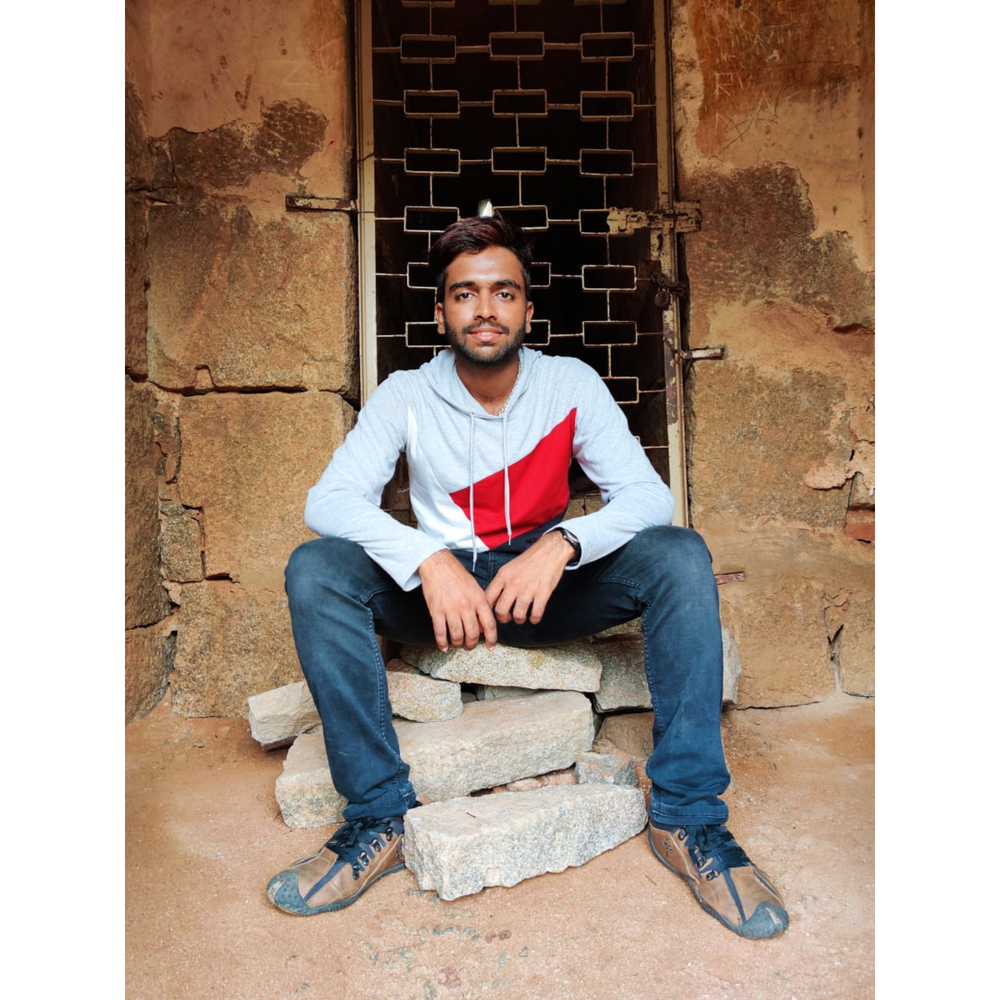

Power is intoxicating. Everyone loves having the ability to make their decisions into reality - to think "this should be omething that happens", and then actually be able to make that thng happen.
Writing was and writing is never my cup of tea. But after months of procrastination, here I am, writing my first blog!
Hello everyone! Welcome to my very FIRST blog post! I'm Sumukh Vasisht S (SVS); I'm 21 years old and a data scientist in the making.
I was born and brought up in Mysore. My family consists of my parents, my brother and myself. My father is an auditor and tax consultant, my mom is a teacher and my brother is in schools, in the 9th grade.

Having never been out of Mysore, except for tourism, I completed 18 years of my education in Mysore itself (and all the schools I attended were just 2 kms away from my house :') ). Anyways, I completed
my pre-primary, primary, middle and high school at V.V.S.B.M.Sri in Kuvempunagar, Mysore. My Pre-University was done in Marimallappa's PU College, one of the oldest and most famous PU Colleges in Mysore. And then I joined
The National Institute of Engineering, Mysore for my Bachelor's of Engineering in Information Science, which I completed in 2021.
In my free time, my musical instruments come to 'play'. I play piano and guitar. I read novels, mainly fiction. I'm not much of a 'series guy'. I prefer movies over series any other day. I game a lot! And then
there's my bike, which I take out for a spin every now and then. (Haven't been biking much since March, 2020 due to the pandemic. That's sad :( )
Why I decided to blog?
I have always wanted to share my experiences, my dreams and passion in the form of a story. Blogs are the best way to do this. I'm not at all interested in the 'reach' my blog will be getting. But to know
that there might be someone out there who would enjoy reading my stories will give me a very huge deal of satisfaction and happiness!
Now that I'll be graduating from my undergrad in a few days and I'll be starting my next phase of life, I felt this was a very good time to realise one of my smaller dreams. I'll be starting out as a grad student
in Data Science at Northeastern University, Boston in a couple of months. For someone who has never been out of the home city for anything other than tourism, this is one of that scary phases - moving thousands of miles
away from home, living with the unknown. I felt that this phase of my life will give birth to many new experiences, and hence, the blog came into picture. I'll also be writing technical blog posts, based on the little tech
I know and have worked with.
I plan to write atleast 2 posts a month, but let's see if that can be implemented from my end. If you want to stay updated, you can consider subscribing to my blog on the home page. No spam messages. That's
a promise!
You can get in touch with me on LinkedIn, or write to me at svs.codes@gmail.com.
Thanks for your time!
SVS
{{ blogInformation['about-me'] }}